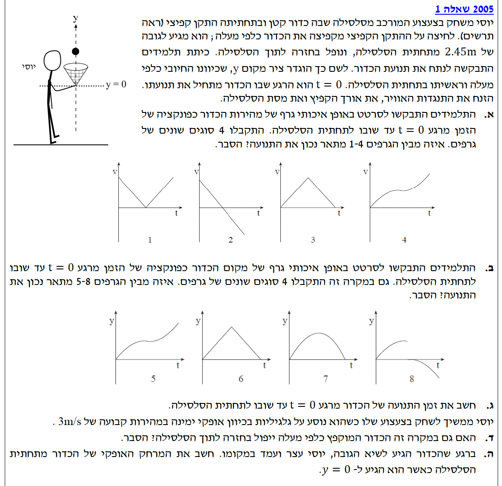

בתרגיל זה אנו מנתחים תנועה של גוף (כדור) הנזרק אנכית כלפי מעלה בהשפעת כוח הכובד בלבד (הוזנחה התנגדות האוויר). מערכת הצירים הוגדרה בשאלה: ציר ה-\(y\) מכוון כלפי מעלה, ונקודת האפס \(y=0\) נמצאת בתחתית הסלסילה. לכן, תאוצת הנפילה החופשית תקבל סימן שלילי במערכת צירים זו. נשתמש בערך המקובל \(g = 10 \text{ m/s}^2\).
הכדור נורה מנקודה \(y_0 = 0\) בזמן \(t_0 = 0\) כלפי מעלה. המהירות ההתחלתית \(v_0\) חיובית (כי כיוונה ככיוון ציר ה-\(y\)). הכדור נמצא באוויר בהשפעת כוח הכובד בלבד (נפילה חופשית).
לזהות איזה מבין 4 גרפים (של מהירות כפונקציה של הזמן) מתאר נכונה את תנועת הכדור מרגע שיגורו ועד חזרתו לאותה נקודה.
מכיוון שהכדור נמצא באוויר בהשפעת כוח הכובד בלבד, מדובר בתנועה של "נפילה חופשית". בתנועה כזו, ידוע כי תאוצת הגוף היא קבועה וכיוונה תמיד כלפי מטה. מכיוון שמערכת הצירים הוגדרה כך שציר ה-\(y\) מכוון כלפי מעלה, התאוצה תקבל סימן שלילי:
נציב את התאוצה במשוואת המהירות-זמן של הקינמטיקה:
זוהי משוואה של קו ישר (פונקציה ליניארית). השיפוע שלה הוא שלילי וקבוע (התאוצה). היא מתחילה מערך חיובי \(v_0\) (המהירות בה נורה הכדור), חוצה את ציר ה-\(t\) (כאשר המהירות מתאפסת בשיא הגובה), וממשיכה לערכים שליליים כאשר הכדור נופל חזרה מטה (גודל המהירות גדל בכיוון השלילי).
הגרף היחיד מבין הארבעה שהוא קו ישר רציף בעל שיפוע שלילי קבוע היורד לערכים שליליים הוא גרף 2.
אותם נתונים מסעיף א': מיקום התחלתי \(y_0 = 0\), מהירות התחלתית \(v_0 > 0\), ותאוצה קבועה \(a_y = -10 \text{ m/s}^2\).
לזהות איזה מבין גרפים 5-8 מתאר נכונה את המיקום \(y\) כפונקציה של הזמן \(t\).
נתאים את הנוסחה הכללית לציר ה-\(y\) ולנתונים שלנו:
משוואה זו היא פולינום ממעלה שנייה, כלומר הגרף הוא פרבולה.
מכיוון שהמקדם של איבר ה-\(t^2\) הוא שלילי (\(-5\)), מדובר בפרבולה "בוכה" (נפתחת כלפי מטה).
המיקום ההתחלתי הוא בראשית הצירים (כאשר \(t=0 \rightarrow y=0\)).
הכדור עולה עד לנקודת מקסימום וחוזר לאפס.
גרף 5: פרבולה צוחקת - שגוי.
גרף 6: קווים ישרים (משולש) המייצגים מהירות קבועה ללא תאוצה - שגוי.
גרף 8: מתחיל מנקודה השונה מאפס - שגוי.
גרף 7 מתחיל ב-0, צורתו פרבולה הנפתחת כלפי מטה, וחוזר ל-0.
בסעיף זה מתגלה לנו נתון חדש: הגובה המרבי אליו מגיע הכדור הוא \( y_{max} = 2.45 \text{ m} \). בנוסף אנו יודעים שבשיא הגובה, מהירות הכדור הרגעית היא אפס (\( v_{top} = 0 \)). היחידות כבר מוגדרות במערכת MKS (מטרים) ולכן אין צורך בהמרה.
את זמן התנועה הכולל של הכדור מרגע \(t=0\) (יציאה) ועד שובו לתחתית המסילה (ל-\(y=0\)).
שלב ראשון: חסרה לנו המהירות ההתחלתית \(v_0\). נשתמש בנוסחה מקשרת מהירות-מקום ללא הזמן עבור תנועת העלייה (מההתחלה ועד שיא הגובה):
(אנו בוחרים בתשובה החיובית כי הכדור נורה מעלה)
שלב שני: כעת כשיש לנו את המהירות ההתחלתית, נחשב את הזמן הכולל. נדרוש שהמיקום יהיה שוב \(y = 0\):
נקבל שני פתרונות:
יוסי מסיע את הצעצוע על גלגיליות בכיוון אופקי ימינה, במהירות קבועה בגודלה: \( v_x = 3 \text{ m/s} \). הכדור מוקפץ מעלה מתוך הצעצוע (המסילה).
לקבוע האם במקרה זה, כאשר יוסי נוסע מהירות קבועה, הכדור ייפול בחזרה אל תוך הסלסילה ולהסביר.
ננתח את התנועה בשני צירים נפרדים (עקרון אי-התלות של התנועות, גליליי):
ציר אופקי (\(x\)):
רגע לפני הקפצת הכדור, לכדור וליוסי יש את אותה מהירות אופקית (\(3 \text{ m/s}\)). ברגע שהכדור מוקפץ, לא פועל עליו שום כוח בכיוון האופקי (הוזנח חיכוך אוויר). לכן, לפי החוק הראשון של ניוטון, הכדור שומר על מהירותו האופקית הקבועה \( v_{x,ball} = 3 \text{ m/s} \).
יוסי ממשיך לנוע באותה מהירות קבועה \( v_{x,yossi} = 3 \text{ m/s} \).
מכיוון שהמהירויות האופקיות שוות, העתקם האופקי בכל רגע \(t\) שווה: \( \Delta x_{ball} = \Delta x_{yossi} = 3 \cdot t \).
ציר אנכי (\(y\)): הכדור עולה ויורד בדיוק כפי שחישבנו בסעיפים הקודמים (רק כוח הכובד פועל בציר זה).
מסקנה: בכל רגע נתון, מיקומו האופקי של הכדור שווה למיקומה האופקי של הסלסילה. לכן, כאשר הכדור יגיע שוב לגובה \(y=0\), הסלסילה תהיה בדיוק מתחתיו.
יוסי עוצר ועומד במקומו בדיוק ברגע שהכדור מגיע לשיא הגובה. ממה שחישבנו קודם, הזמן להגיע לשיא הגובה הוא חצי מזמן התעופה הכולל: \( t_{top} = 0.7 \text{ s} \). הזמן שנותר לכדור ליפול חזרה מגובה מקסימלי ל-\(y=0\) הוא המחצית השנייה: \( t_{down} = 0.7 \text{ s} \). מהירותו האופקית של הכדור נשארת: \( v_x = 3 \text{ m/s} \).
את המרחק האופקי שייווצר בין יוסי (הסלסילה) לבין הכדור ברגע שהכדור יגיע לגובה \(y=0\).
מרגע שיוסי עצר (כאשר הכדור בשיא הגובה), מהירותו האופקית מתאפסת והוא נשאר במקום.
לעומת זאת, הכדור נמצא באוויר ואין שום כוח באוויר שיעצור את מהירותו האופקית. הכדור ממשיך לנוע ימינה במהירות קבועה של \( 3 \text{ m/s} \).
הזמן שלוקח לכדור לרדת משיא הגובה ועד הפגיעה בקרקע (\(y=0\)) הוא:
במהלך זמן ירידה זה, הכדור עובר מרחק אופקי שאותו נחשב:
מכיוון שיוסי עמד במקום בדיוק מחתת לנקודת שיא הגובה של הכדור, הכדור נחת במרחק של 2.1 מטרים ממנו.